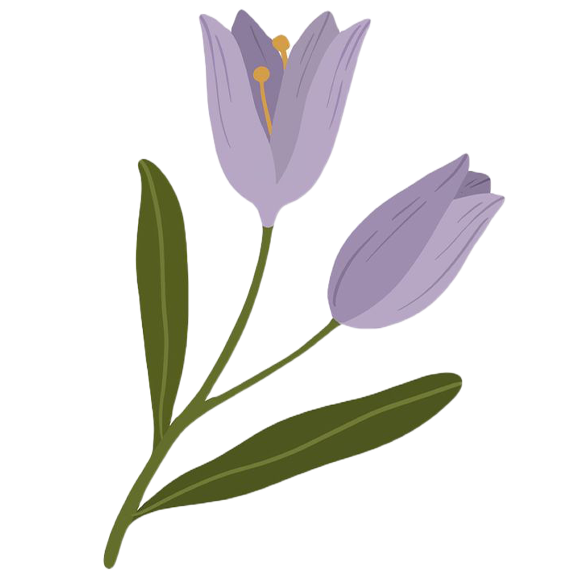
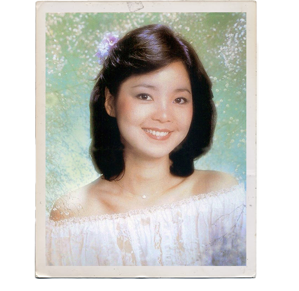
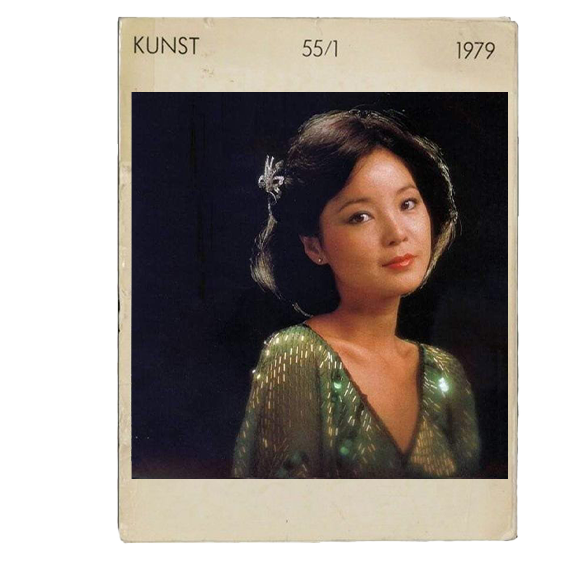
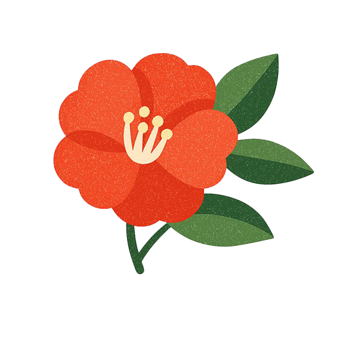
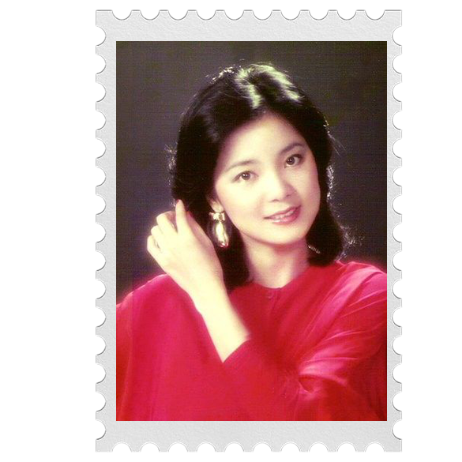

Teresa Teng was one of the most influential Chinese singers of the 20th century. She was known for her sweet, gentle voice and emotional singing style. Her music became popular across China, Taiwan, Hong Kong, Japan, and Southeast Asia.
Teresa Teng






